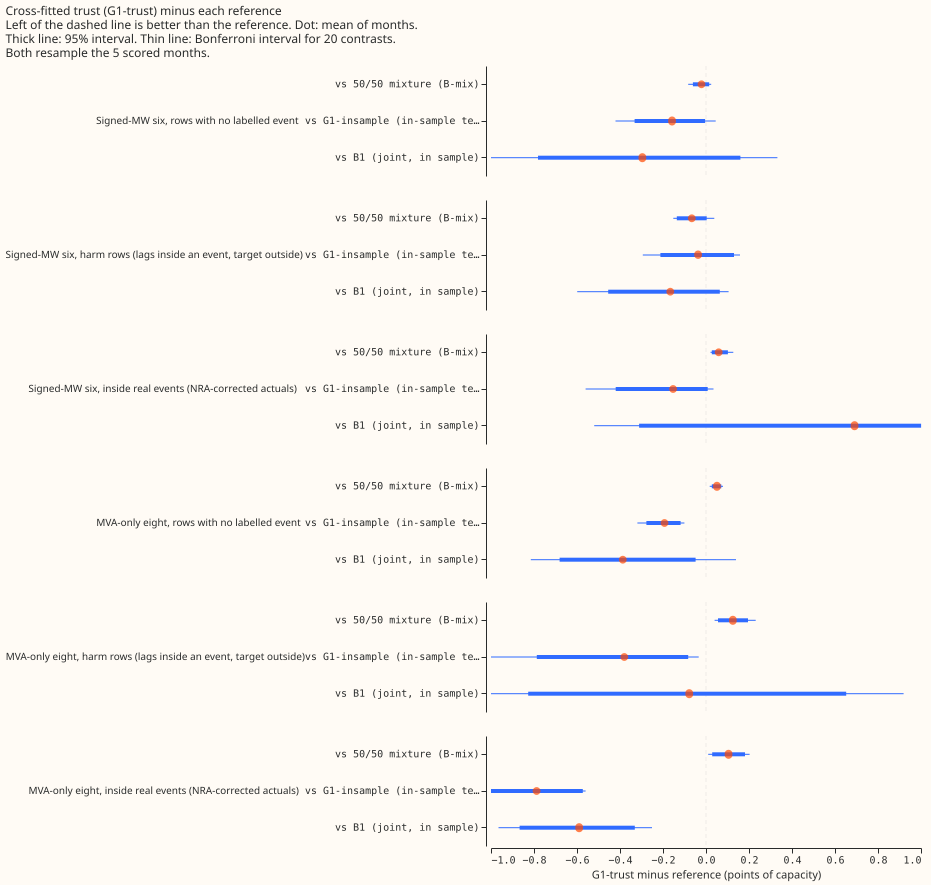
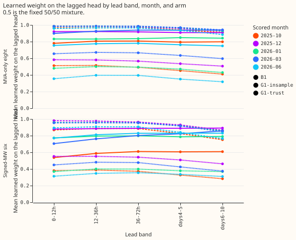
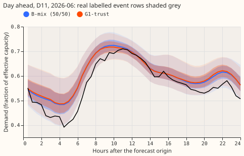
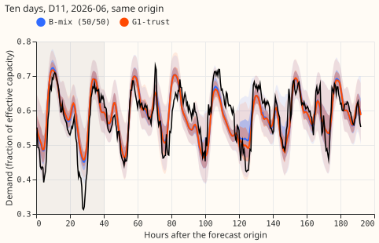
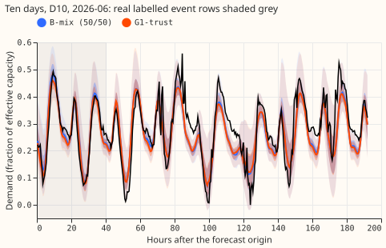
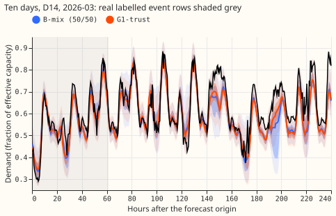
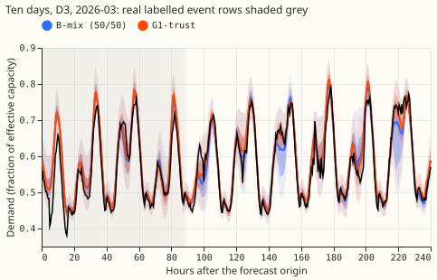
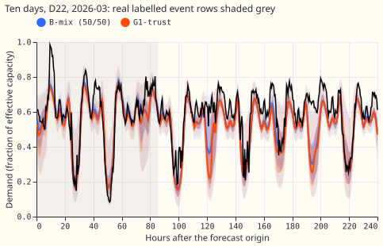
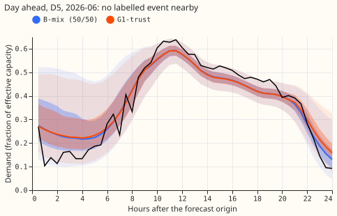
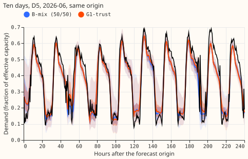

Does fitting the trust weight on out-of-fold lagged heads close the gap between a learned trust weight and the fixed 50/50 mixture?
Fitting the trust weight on lagged forecasts that did not see its fitting rows removes the learned weight's loss to the fixed 50/50 mixture on rows with no labelled event, but the learned weight does not beat 50/50 inside real events. Experiment 404 combined a lagged forecast (one that reads the recent power readings, the lags) with a lagless forecast (one that does not), either by a fixed 50/50 average or by a learned trust weight that sets how far to trust the lagged forecast. The learned weight lost to 50/50. We asked whether it lost because the lagged forecast had been fitted on the same rows as the weight, so that the lagged forecast looked better on those rows than it is on new months. For each of five scored months, we split the two-year training window into six consecutive blocks and trained six lagged-forecast neural networks, each leaving out one block. Every training row then has a lagged forecast from a neural network that did not see it. We fitted the trust weight on those forecasts, beside the lagless forecasts that were also made without the row, and scored it on the scored month. A control fits the same weight on lagged forecasts that did see the rows (G1-insample), which shows how much worse the score is because of the mismatch. NGED's event labels (the load shifts it has logged) are incomplete, so rows with no labelled event may hold unlogged events and the real-event rows undercount. The numbers are interim: five scored months and one seed, and the choice of fold split is untested.
The experiment fails its adoption rule, and the in-sample mismatch accounts for part of the earlier loss. Inside real events the learned weight is worse than 50/50, not better. Fitting out of fold gains 0.16 points over fitting in sample on rows with no labelled event at the six signed-megawatt substations, and 0.19 at the eight MVA-only substations. The 95% interval of the first gain barely excludes zero and its Bonferroni interval spans zero, so the mechanism rests on the pre-registered point-estimate rule and on the eight-substation result. The search narrows to a better-matched lagged forecast (a finer fold split, so the out-of-fold neural network is nearer the full-data one), or to keeping 50/50.


Figures 3 and 4 show a day-ahead and a ten-day forecast from one origin across a real event at the primary substation D5 (the grey band marks event rows). Figures 7 to 10 repeat the ten-day forecast across real events at two more signed-megawatt substations and two MVA-only substations. The two forecasts are close everywhere, as the small contrasts suggest.






Figures 5 and 6 show the same forecasts at D5 with no labelled event nearby.


Results
Scores are in points of effective capacity, and a negative contrast favours the first arm. A point is 200 times the mass-weighted pinball loss over 11 quantiles. Leads are 0 to 240 hours (lead days 1 to 10) on the real-data world. The unit of resampling is the month: five scored months (2025-10, 2025-12, 2026-01, 2026-03, 2026-06), four where a group has no event. Intervals are 95% month-resampled intervals; the Bonferroni interval for 20 contrasts is in the experiment's private folder and in figure 1. Four row sets are used. No-label rows have no labelled event in the day windows, the lags, or the target. Harm rows have a labelled event in a day window or lag and the target outside every event. Real-event rows have the target inside a padded event or within 96 half-hours after one. NRA-corrected actuals subtract the estimated load moved by the event, so the actual is the demand under the normal running arrangement (NRA); depth factor 1.0 is the headline.
- B-mix. The 50/50 mixture of the lagged forecast A0-inj (experiment 404's plain network trained on injected events) and the lagless forecast; it is the reference.
- B1. Experiment 404's trust weight, learned jointly with the lagged forecast, in sample.
- G1-insample. The trust head fitted with both forecasts frozen, the lagged forecast being the full-data A0-inj network evaluated on its own training rows.
- G1-trust. The same frozen-head fit on the out-of-fold lagged forecasts.
- Why G1-insample exists. B1 differs from G1-trust in three ways: its lagged forecast is trained jointly with the trust, its lagged forecast also reads the lagless forecast, and it is fitted in sample. G1-trust against G1-insample isolates the third. The control was not in the brief; the neural Discuss session is informed here.
Absolute scores at the six signed-megawatt substations.
| Arm | No label | Harm | Real event, NRA 1.0 | Real event, metered |
|---|---|---|---|---|
| B-mix | 3.513 | 3.680 | 13.139 | 5.955 |
| B1 | 3.788 | 3.780 | 12.507 | 6.470 |
| G1-insample | 3.650 | 3.651 | 13.351 | 5.962 |
| G1-trust | 3.492 | 3.614 | 13.198 | 6.006 |
| A0-inj alone | 3.824 | 3.811 | 13.487 | 6.078 |
| Lagless alone | 3.763 | 3.933 | 13.243 | 6.284 |
Contrasts at the six signed-megawatt substations, with 95% intervals. The minimum detectable effect is 0.32, 0.42, 0.38, and 0.26 for the four row sets in the table order.
| Contrast | No label | Harm | Real event, NRA 1.0 | Real event, metered |
|---|---|---|---|---|
| G1-trust minus B-mix | -0.021 [-0.061, +0.015] | -0.066 [-0.136, +0.003] | +0.059 [+0.027, +0.102] | +0.051 [-0.004, +0.106] |
| G1-trust minus G1-insample | -0.158 [-0.332, -0.004] | -0.037 [-0.212, +0.130] | -0.153 [-0.420, +0.008] | +0.044 [-0.067, +0.177] |
| G1-trust minus B1 | -0.296 [-0.781, +0.160] | -0.166 [-0.455, +0.064] | +0.691 [-0.311, +2.336] | -0.464 [-1.055, +0.040] |
- Sensitivity of the headline. Real event, NRA depth 0.75: +0.061; depth 1.25: +0.060; with the largest event dropped: +0.015. Leaving D5 out lowers the rows-pooled real-event contrast from +0.076 to +0.011.
- B1 inside events. B1 is the only one of the six arms better than 50/50 on real-event rows with NRA-corrected actuals (-0.632 [-2.281, +0.359], 3 of 5 months negative); its interval spans zero.
- Eight MVA-only substations, G1-trust minus B-mix. No label +0.051 [+0.027, +0.071]. Harm +0.125 [+0.056, +0.195]. Real event with NRA depth 1.0 +0.105 [+0.029, +0.181] (four months), and with metered actuals +0.040 [-0.044, +0.134].
- Eight MVA-only substations, G1-trust minus G1-insample. No label -0.193 [-0.277, -0.118]. Harm -0.380 [-0.787, -0.083]. Real event with NRA depth 1.0 -0.788 [-1.003, -0.573].
- Learned weight on the lagged forecast (mean over scored months). At the six signed-megawatt substations, G1-trust is 0.41 at 0-12 h, 0.43 at 12-36 h, 0.43 at 36-72 h, 0.40 at days 4-5, and 0.36 at days 6-10. G1-insample falls from 0.93 to 0.82, and B1 rises from 0.73 to 0.80. The range over months within a lead band is 0.18 to 0.24 for G1-trust (0.31 to 0.55 at 0-12 h), above the 0.1 stability rule, so seed 1 was not run. At the eight MVA-only substations, G1-trust falls from 0.52 to 0.45.
- Training-row diagnostic. The weighted negative log-likelihood of the lagged forecast on the training rows is 0.83 to 0.92 out of fold and 0.19 to 0.24 in sample, against 0.71 to 0.97 for the cross-fitted lagless forecast. An out-of-fold neural network is therefore a much weaker forecast than the full-data one that scores the scored month.
- Tails at the six signed-megawatt substations, no label. Coverage at q01, q05, q95, and q99 is 0.006, 0.029, 0.845, and 0.943 for G1-trust, and 0.006, 0.028, 0.855, and 0.949 for B-mix. The q99 pinball loss is 0.0027 and 0.0026. Inside real events, q99 coverage is 0.805 for G1-trust and 0.807 for B-mix. Every arm under-covers the upper tail (the nominal values are 0.95 and 0.99), and G1-trust is no different from B-mix. Curtailment cost does not apply in the 404 harness.
- Predictions. P1 failed on level: the weight is 0.41 falling to 0.36, not 0.75 falling to 0.5; the monthly swing is 0.18 to 0.24 (at least 0.2 in 2 of 5 lead bands). P2 half held: the real-event contrast is inside the minimum detectable effect, but its interval excludes zero, and the no-label contrast (-0.021) is just outside the predicted 0.00 to +0.10. P3 held (-0.158 within -0.05 to -0.30). P4 held.
- Fit count and time. 40 fits: 30 out-of-fold lagged-forecast fits at about 14 s each and 10 trust fits at about 7 to 12 minutes each, about 1 hour 50 minutes on one GPU process under 8 GB.
- Where the code and outputs are. The code is in
ml-experiments/00463-lag-trust-cross-fitted-trust-fit-seed-zero/. It reuses the modules of experiment 404 and of experiments 87, 48, and 397, and the scoring pattern of experiments 455 and - Forecasts and trust networks are in the experiment's private data folder. The 30 out-of-fold
networks are not kept; their out-of-fold forecasts are, as
oof_<month>_s0.npy. Retraining is monthly. The cleaned data and the D15 and D18 cut are inherited from experiment 404's rows.
Checks
- Median forecast minus mean forecast per site. This check is not available because the 404 harness stores 11 quantiles and no mean forecast. The error of the median forecast is reported instead.
- Error of the median beside the score contrasts. G1-trust minus B-mix, mean absolute error of the q50 forecast (fraction of capacity): +0.0002 (no label), -0.0011 (harm), and +0.0005 (real event) at the six signed-megawatt substations, and +0.0008, +0.0019, and -0.0008 at the eight MVA-only substations. One point of score is 0.005 of capacity at q50 (the pinball loss at q50 is half the absolute error), so +0.0002 is about +0.02 points. The no-label score contrast is slightly negative (-0.021) while the median error is slightly positive; both lie inside their noise.
- Trigger that fired. Audit trigger 2 (a result that contradicts its prediction and an earlier experiment) fired: the learned weight of 0.41 falling to 0.36 contradicts the prediction (0.75 falling to 0.5) and experiment 458's fitted weights. Triggers 1, 3, 4, 5, 6, and 7 did not fire.
- What the audit confirmed. A fresh Sonnet audit re-derived every headline contrast from the stored forecasts and matched the printed values to three decimals. It found no leakage, and found the low weight consistent with an out-of-fold lagged forecast weaker than the full-data one.
- What the audit qualified. The best constant weight on the scored months is 0.6 falling to 0.4 at the six signed-megawatt substations, above the learned weight; that gap lowers the score by 0.03 to 0.08 points. Training on five sixths of the rows is one of three candidate causes: the fold also removes a four-month season, and the full network memorises its training rows.
- Caveats the audit adds. The lagless forecast has the same mismatch between its cross-fitted and full-data versions; this has not been tested. The trust trains on the injected world (4.6% of half-hours carry an injected event) and is scored on real power. The weight is fitted by negative log-likelihood and scored by pinball loss, so the fitted weight need not be the weight that minimises the score.
What it rules out and what to try next
- What it rules out. Experiment 404's in-sample fit is no longer a reason for a learned trust to lose to 50/50 on rows with no labelled event, because fitting out of fold removes that loss. A learned combination weight is not an improvement over 50/50 in this harness.
- What could be tested next. A finer fold split (12 folds or interleaved weeks) and a lagged forecast evaluated on the scored month would show whether the remaining gap closes. B1's NRA-corrected result inside events (-0.63, interval spanning zero) is the only sign we found of a gain from a learned weight there. Otherwise the fixed 50/50 mixture stays.